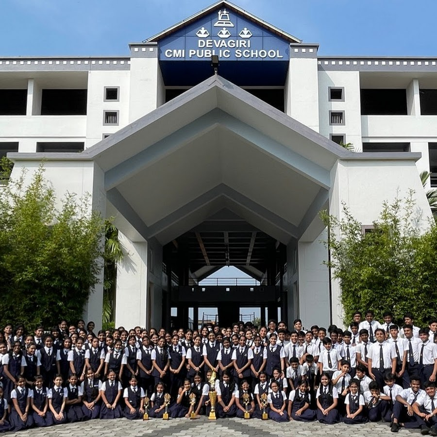

Core Identity and Vision
The school follows the CBSE curriculum and is dedicated to providing a holistic learning experience that balances rigorous academics with moral and spiritual growth.
The school follows the CBSE curriculum and is dedicated to providing a holistic learning experience that balances rigorous academics with moral and spiritual growth.
Known for its high standards, the school emphasizes critical thinking, creativity, and professional mentoring to prepare students for a rapidly changing global landscape.
Located in the serene landscapes of Kozhikode, Kerala,Devagiri CMI Public School is a premier co-educational institution that stands as a beacon of academic excellence and character formation.
